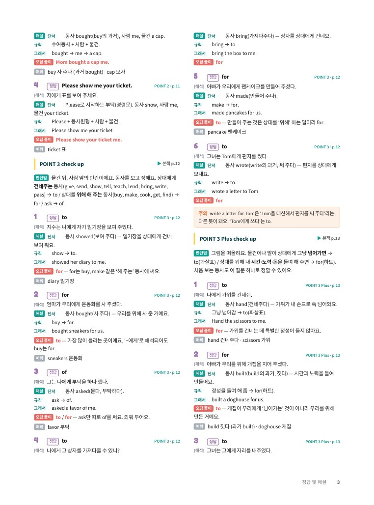
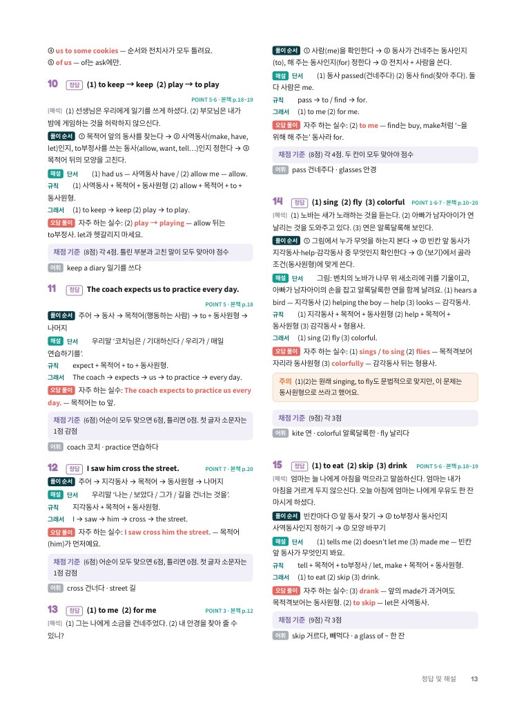
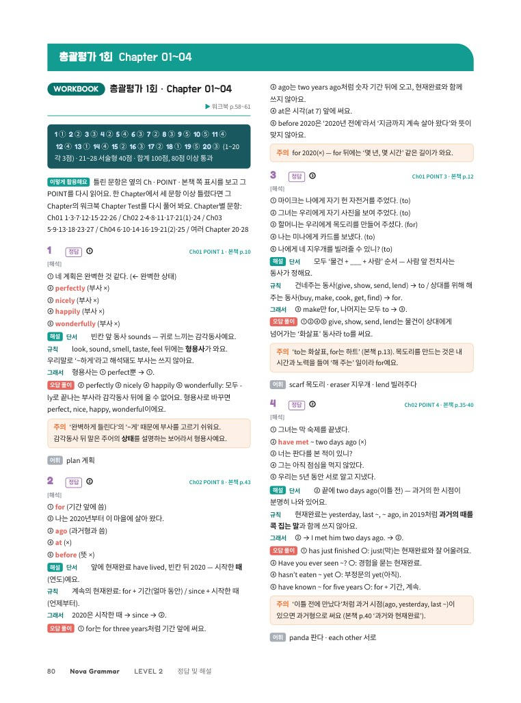
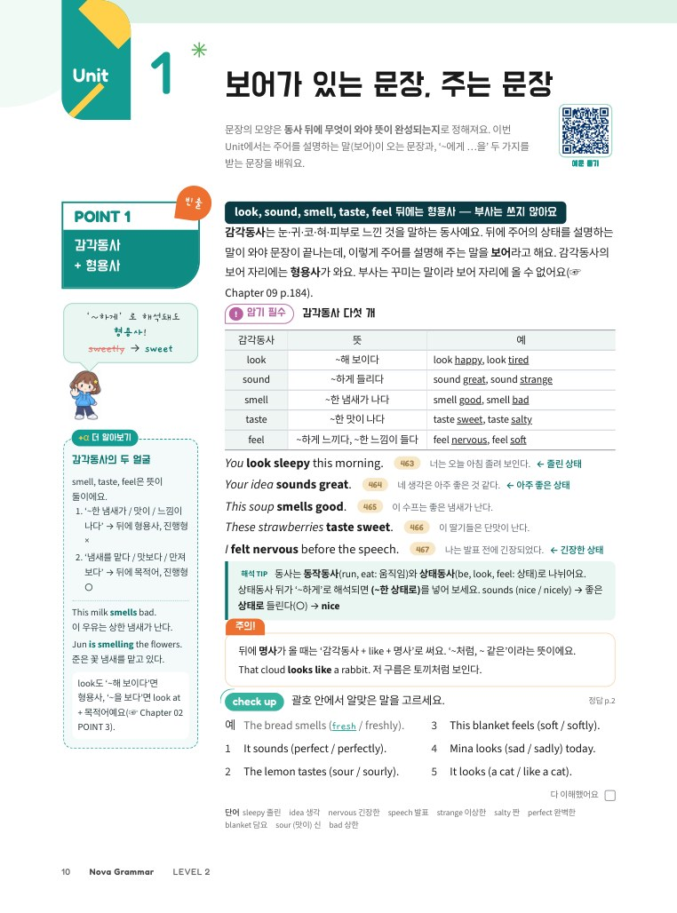

중학 영문법 · 개념부터 내신까지
NovaGrammar
LEVEL2중2
정답 및 해설
혼자서도 이해되는 자세한 해설
단서 → 규칙 → 그래서모든 선택지 오답 풀이서술형 채점 기준본책·워크북 전체
NOVA ENGLISH정답 및 해설 · 별책
틀린 이유까지
알려 주는 해설
정답만 확인하고 끝내지 마세요.
왜 정답인지, 왜 다른 답은 틀렸는지 읽고
표시된 POINT로 돌아가면 같은 실수를 하지 않아요.
13단계 풀이
모든 문항을 단서 → 규칙 → 그래서 순서로 풀어, 선생님 설명 없이도 이해할 수 있어요.
2오답 풀이
Chapter Test와 총괄평가의 객관식은 정답이 아닌 선택지까지 하나씩 왜 틀렸는지 알려 줘요.
3서술형 채점 기준
풀이 순서, 부분 점수, 자주 하는 실수, 다른 정답까지 담아 스스로 채점할 수 있어요.
4다시 볼 곳
문항마다 POINT와 본책 쪽을 표시해 틀린 문제를 바로 복습할 수 있어요.
미리 보기

Unit 해설
Chapter Test 해설
총괄평가 해설
본책 POINT구성정답 및 해설 243쪽본책 + 워크북 + 총괄평가
Nova Grammar LEVEL 2중학 영어 2학년 문법 · 정답 및 해설